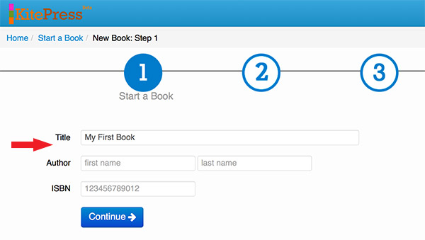
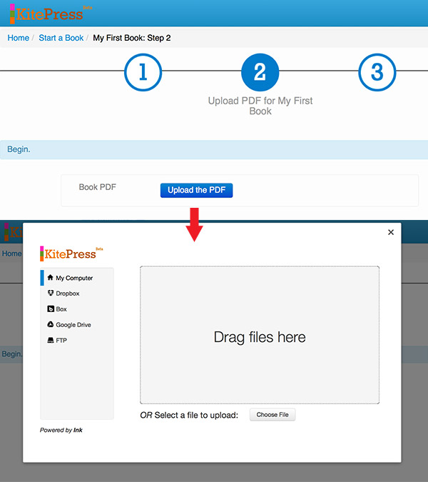
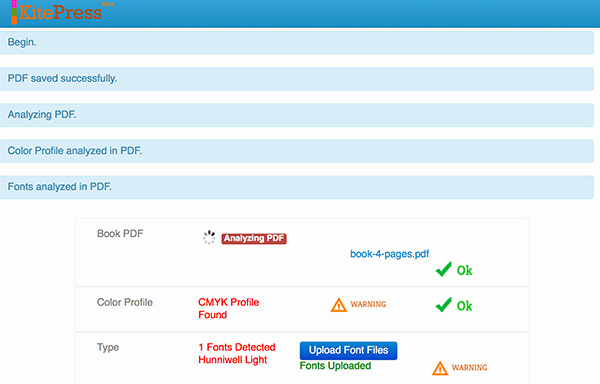
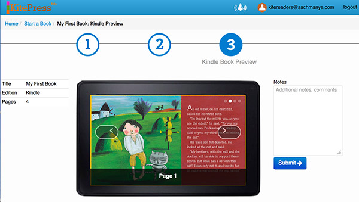
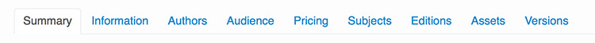

The dashboard is the starting point for navigating to any area within your account, from creating an eBook to managing book projects, adding users, tracking book reviews, reviewing metrics and financials.
From the dashboard, click on "Manage Users". Type in the email address of the user you want to add and click "invite collaborators". Once the new user accepts the invitation, you will see them listed, along with the books they can access and the number of times they've signed in.
From the dashboard, select "Create Book".
Follow the 3-step Book Wizard to create your new book. Step 1 prompts you to enter basic book information.
Step 2 prompts you to upload your book PDF and font files via a simple drag & drop interface.
It will analyze the PDF to validate that it has the right color profile (RGB) amongst other things. Once the uploads are validated with an "ok", press continue.
Step 3 enables you to view a simulation of your book as it would appear on the device your ebook is designed for. You may make comments on the right; when complete, click "Submit". Your book now goes into processing by the KitePress book engine.
From the dashboard, select "Manage Books". This will take you to a page that lists all the books that you have submitted into KitePress (see image above for example). This overview page shows the title, primary user, devices the ebook is being developed for, and most recent asset upload notes.
To manage the details of a particular title, simply click on the book's title.
Now you are in the detailed section for that title. You'll notice a row of tabs with headers, like "Summary", "Information", "Authors", etc. All the specific details of your book can be found through those tabs.
"Information" gives you fields to enter detailed metadata for the book, as well as a field for entering the link to a book trailer, if you have one.
"Authors" allows you to add/remove key contributors to he book, like Author, Illustrator, and Narrator.
"Audience" is where you'd enter the appropriate age range target for the book.
"Pricing" includes a drop-down for selecting the ebook's retail price.
"Subjects" includes the Bisac Categories and Subcategories where your book should be categorized within stores.
"Editions" allows you to select the devices your ebook will be formatted for and sold.
"Assets" is the place to upload any files related to your book, including manuscript, art files, audio files, and marketing-related resources for promoting your book.
As you are creating your book and first uploading your book PDF, KitePress checks to make sure your PDF has the correct "color profile". If it finds your PDF to be in CMYK, it will issue an error warning. This is because books destined for screen viewing should have an RGB color profile. Books that are designed for print use the CMYK color profile. Without an RGB color profile, book illustrations and graphics will appear less vivid and "washed out" on tablets and eReaders.